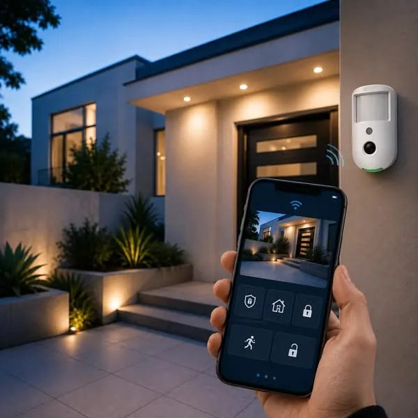
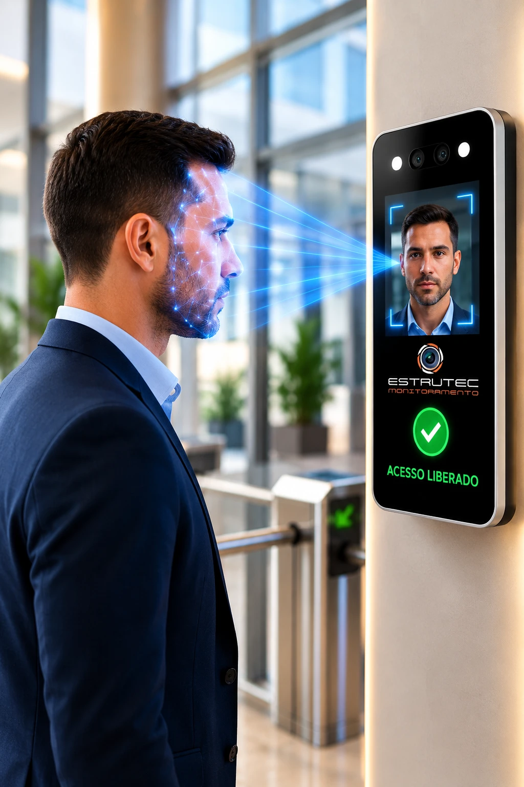
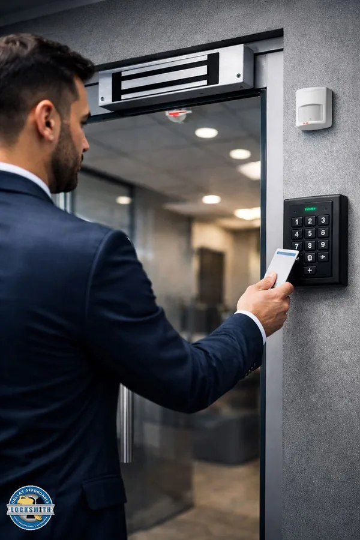
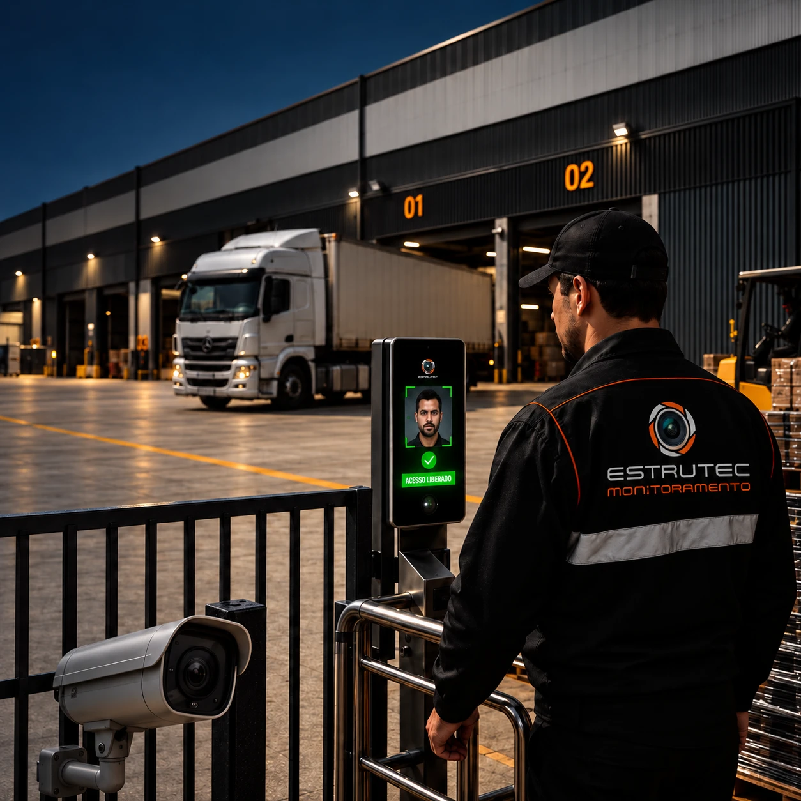
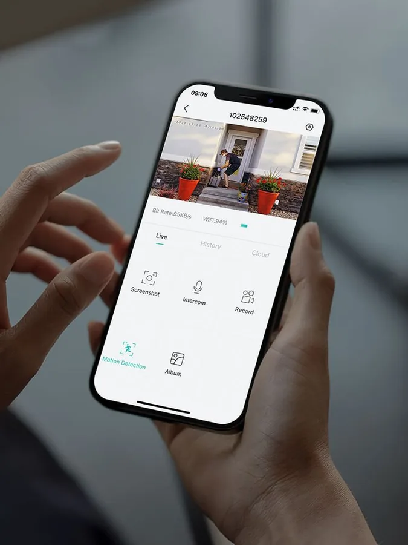
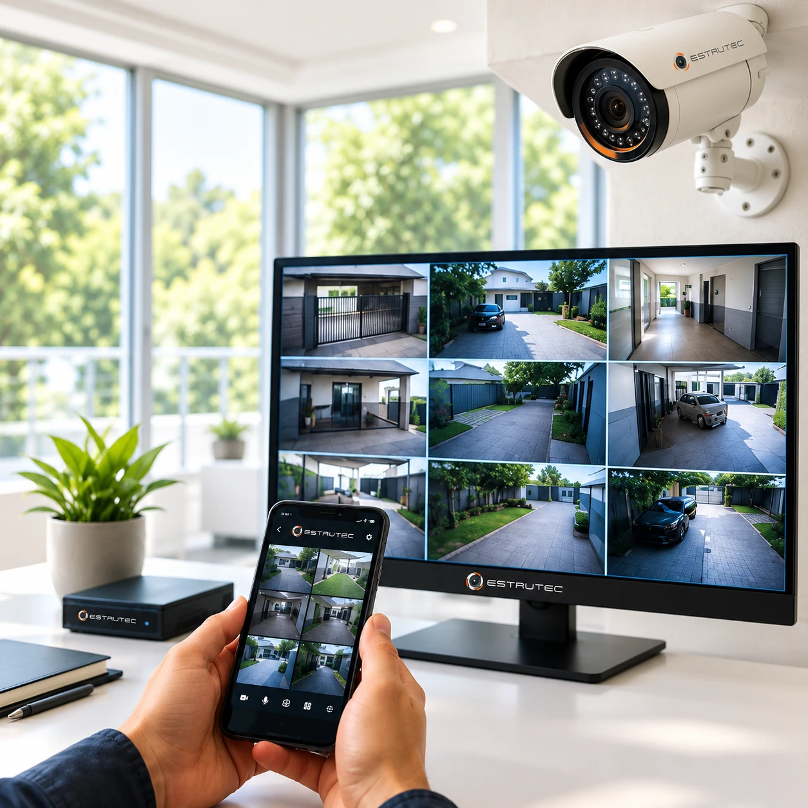
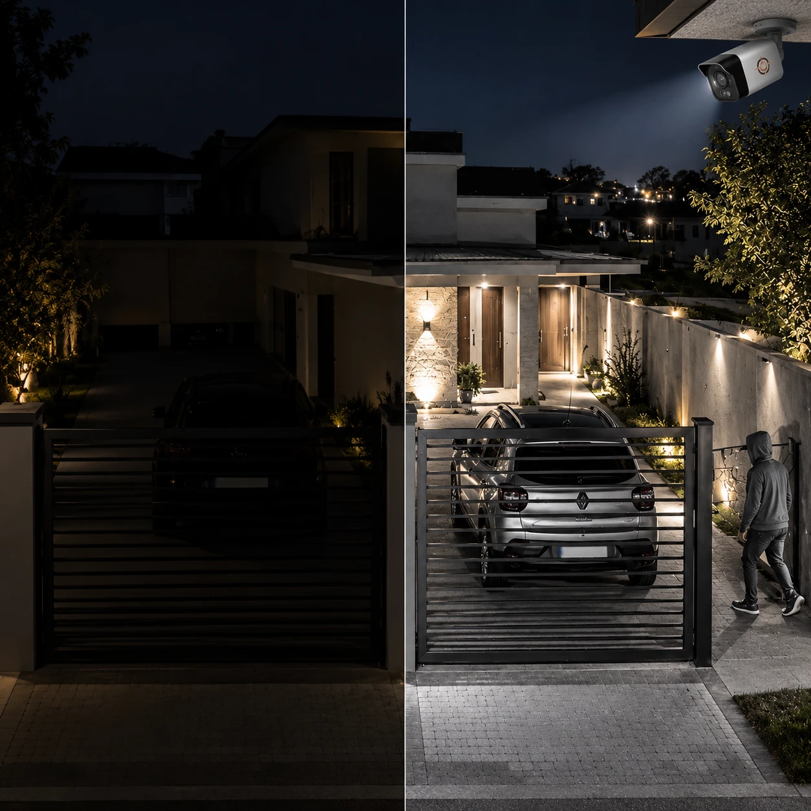
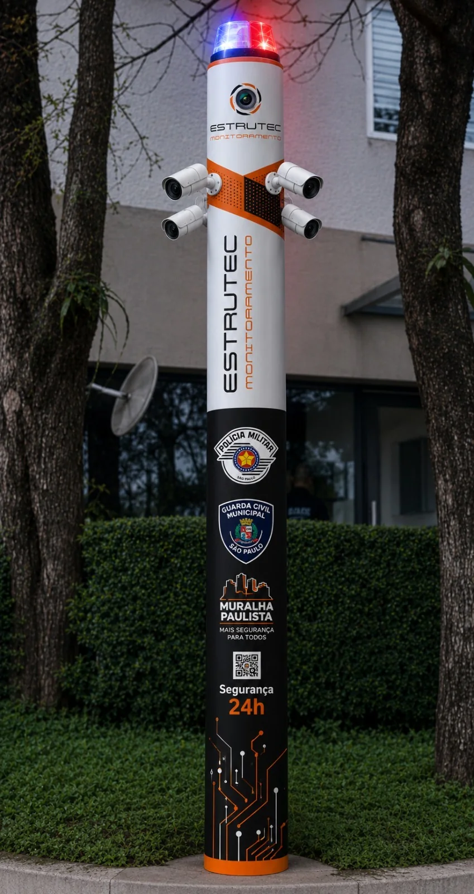

Mais controle
Saiba quem acessa seus ambientes e acompanhe movimentações.
Proteja sua empresa, condomínio ou patrimônio com uma solução completa de segurança, monitoramento 24 horas e tecnologia inteligente.
Fale com a Estrutec e descubra a solução ideal para o seu espaço.
Falar com a EstrutecCadastre-se e continue o atendimento pelo WhatsApp.
Mais do que equipamentos instalados: uma estrutura de segurança pensada para dar controle, visibilidade e tranquilidade à sua operação.
Saiba quem acessa seus ambientes e acompanhe movimentações.
Tenha imagens e informações para acompanhar o que acontece.
Receba alertas e tenha monitoramento preparado para tratar eventos.
Utilize tecnologias capazes de ampliar a capacidade de identificação e análise.
Conte com manutenção preventiva e acompanhamento do sistema.
Acompanhe sua operação de onde estiver, conforme a solução contratada.
Combinamos diferentes tecnologias para construir uma estrutura de segurança de acordo com a sua necessidade.
Acompanhamento contínuo dos eventos, todos os dias, a qualquer hora.
Eventos acompanhados por equipe interna da Estrutec, sem terceirização.

Identificam movimentações e situações de risco e enviam alertas para a central.

Reconhecimento facial para liberar e registrar acessos, sem cartão nem chave.

Mais controle sobre quem entra, sai e circula pelo ambiente, com cartões individuais.

Portaria com reconhecimento facial, cancelas e câmeras para controlar quem entra e sai de galpões e centros logísticos.

Visualize imagens ao vivo e acompanhe seu espaço pelo aplicativo.
A Estrutec avalia o local e indica a combinação certa para a sua realidade.
Acionamento rápido da central em situações de emergência.
Imagens para acompanhar o local também em ambientes com pouca iluminação.
Sensores e recursos para identificar tentativas de invasão pelos limites do espaço.
Câmeras e sistemas de vídeo para ampliar controle, prevenção e identificação.
A inteligência artificial aplicada à segurança amplia a capacidade de identificar situações e apoiar decisões, conforme a tecnologia e o projeto contratado. Transforme imagens em informação para a tomada de decisão.
O CFTV (Circuito Fechado de Televisão) é um sistema de monitoramento por câmeras que ajuda a proteger ambientes, reduzir riscos e acompanhar tudo em tempo real.


Sem visão noturnaCom visão noturnaSem uma câmera com visão noturna eficiente, detalhes importantes podem passar despercebidos justamente no período em que a maioria das ocorrências acontece.

Tecnologia que enxerga. Inteligência que identifica. Monitoramento que protege.
Uma solução desenvolvida para ampliar a segurança de condomínios, empresas, áreas industriais, estacionamentos, operações logísticas, empreendimentos e áreas de grande circulação.
Em caso de falta de energia, as câmeras e o poste inteligente continuam gravando com a alimentação de emergência.
Quero o Poste InteligenteMontamos kits de alarme pensados exclusivamente para as necessidades de cada cliente.
Aqui na Estrutec, não trabalhamos com soluções prontas.
Conhecemos o ambiente, a rotina e os pontos de acesso.
Mapeamos onde estão as vulnerabilidades de cada local.
Um sistema que realmente protege, do jeito certo.
Câmeras, alarmes, sensores, controle de acesso, postes inteligentes e monitoramento trabalhando juntos, como um sistema, e não como peças isoladas.
Quero minha estratégia de segurançaQual é a sua necessidade?
Proteja patrimônio, operação e pessoas com CFTV, IA, alarmes, controle de acesso, monitoramento e manutenção.
Tecnologias integradas para controle e segurança dos espaços compartilhados, residenciais ou empresariais.
Mais visibilidade, controle e prevenção de perdas.
Uma solução planejada para as necessidades da sua casa.
Postes inteligentes e monitoramento para apoiar a segurança em vias e espaços públicos.
Ver uma imagem pelo celular não significa necessariamente que todo o sistema esteja funcionando como deveria.
Muitas falhas só aparecem depois de uma ocorrência.
Uma câmera fora de posição (ponto cego).
Uma gravação que parou.
Uma falha no armazenamento.
Uma visão noturna que não funciona.
Uma câmera sem gravação. Um equipamento fora de operação. Um ponto cego. Um acesso não autorizado. Um furto. Uma invasão. Uma operação interrompida.
O custo de uma ocorrência pode ser muito maior do que o investimento em prevenção.A Estrutec pode avaliar seu sistema, identificar vulnerabilidades e propor melhorias de acordo com a realidade do seu espaço. Conforme o escopo, a avaliação pode considerar câmeras, gravação, pontos cegos, alarmes, controle de acesso, comunicação, armazenamento e integração.
Não espere uma ocorrência para descobrir. Manutenção preventiva e corretiva de sistemas de segurança, conforme a solução contratada, incluindo CFTV, NVR/DVR, alarmes, sensores, nobreaks, redes, controle de acesso, comunicação e armazenamento.
Da avaliação ao acompanhamento diário, você conta com uma única empresa responsável pela sua segurança.
O acompanhamento dos eventos é realizado por equipe interna da Estrutec.
Acompanhamento contínuo da operação.
Da avaliação e projeto à instalação, configuração, integração e acompanhamento.
Câmeras, alarmes, controle de acesso e aplicativo trabalhando de forma complementar.
A solução é definida considerando o ambiente, a operação e o nível de proteção necessário.
Não basta instalar e esquecer. Oferecemos planos de manutenção preventiva para manter o sistema em condições adequadas de operação.
Conhecemos seu espaço, sua rotina e seus principais riscos.
Identificamos pontos críticos, vulnerabilidades e necessidades.
Definimos as tecnologias adequadas para sua operação.
Instalamos, configuramos e integramos a solução.
Monitoramento, acesso remoto e manutenção conforme a contratação.
Você não compra simplesmente um equipamento. A Estrutec acompanha a construção da solução.
Começar pelo diagnósticoRespostas para você dar o próximo passo com mais clareza.
Atendemos indústrias, empresas, comércios, condomínios residenciais e empresariais, galpões, estoques, escolas, consultórios, estacionamentos, franquias, residências e áreas públicas.
É uma solução de segurança para áreas públicas e privadas que reúne câmeras de alta resolução, inteligência artificial, monitoramento 24 horas e comunicação de ocorrências à central.
Sim. Em caso de falta de energia, as câmeras e o poste inteligente continuam gravando com a alimentação de emergência.
Sim. O monitoramento 24 horas é uma das nossas principais soluções. A equipe orienta a contratação de acordo com as necessidades do seu espaço.
Sim. As soluções com acesso remoto permitem visualizar as imagens pelo aplicativo. A disponibilidade depende da configuração e da solução contratada.
Sim. O acompanhamento dos eventos é realizado por equipe interna da Estrutec.
Sim. Oferecemos planos de manutenção preventiva para manter os sistemas em condições adequadas de operação. Consulte as opções com a nossa equipe.
Sim. Montamos kits pensados exclusivamente para as necessidades de cada cliente, como um kit de alarme personalizado. Não trabalhamos com soluções prontas: analisamos o espaço, identificamos riscos e desenvolvemos um sistema que realmente protege, do jeito certo.
Atendemos a Grande São Paulo e região, com clientes também no interior do estado, como em Guarulhos, Mogi das Cruzes, Arujá e Campinas. Consulte a disponibilidade para a sua região com a nossa equipe.
Descubra o que sua empresa, condomínio ou residência realmente precisa para estar protegida.
Inicie seu atendimento pelo WhatsApp.